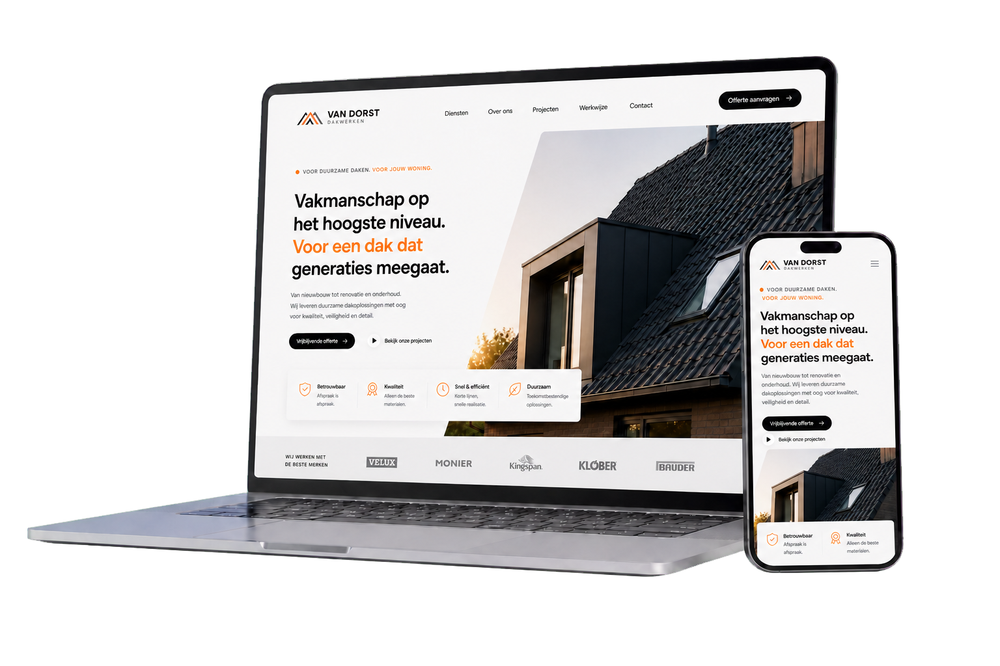
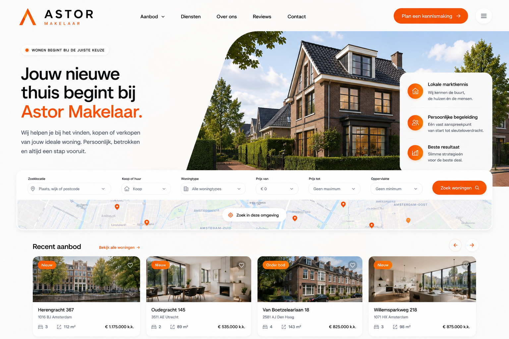
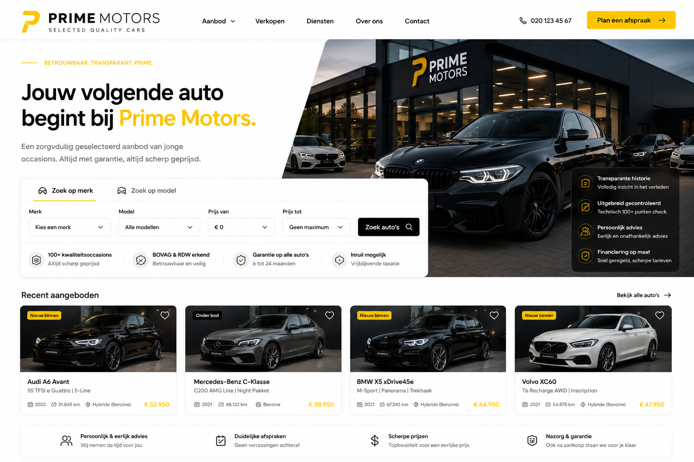
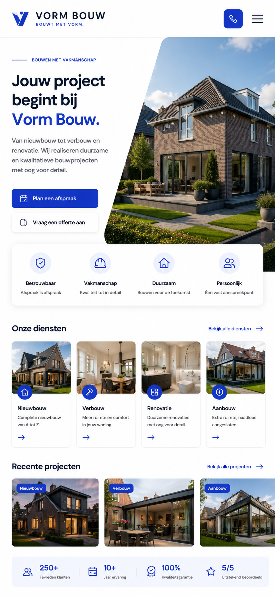
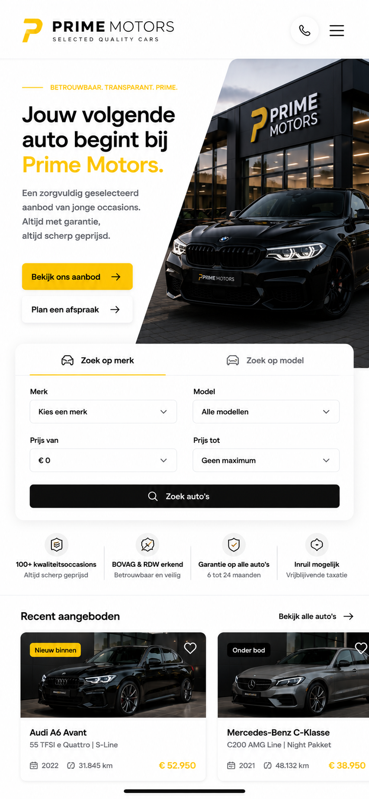
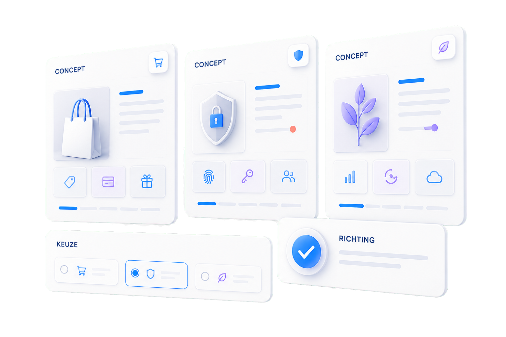
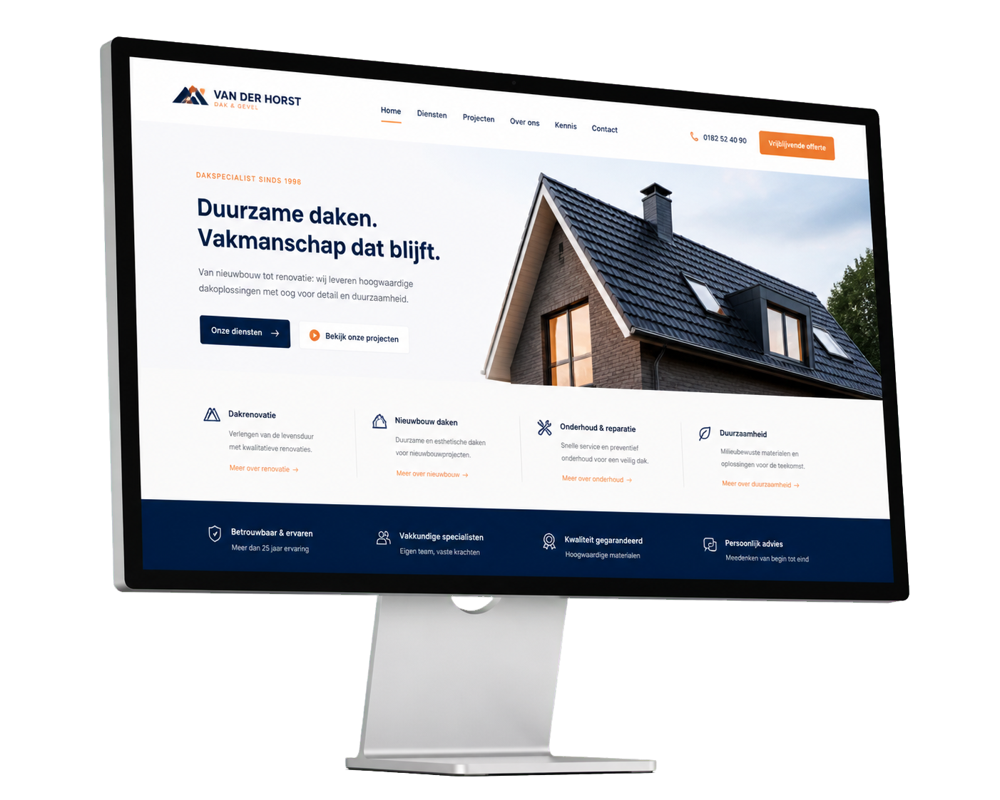

Herkenbaar vanaf de eerste seconde.Positionering, tone of voice en uitstraling vormen één geheel.
CONCEPTEN DOOR WEBSCHETS
Jouw sector.
Jouw sector.
Een eigen verhaal.
Ieder concept begint bij jouw sector en doelgroep. We combineren strategie met een herkenbare uitstraling. Zo ontstaat een uniek ontwerp dat bezoekers gericht activeert.
Ontdek jouw sector
Vijf branches. Eindeloos maatwerk.

Responsive conceptDesktop en mobiel als één ervaring


EEN RICHTING, GEEN TEMPLATE
Sectorinzicht+jouw merk→een eigen digitaal concept
Altijd op maatKIES EEN RICHTINGJouw sector bepaalt
Jouw sector bepaalt
wat voorrang krijgt.
Selecteer een branche. De visual, inhoud en belangrijkste conversieroute veranderen direct mee.
VASTGOEDCONCEPT
Woningen die je al wilt ervaren.
Grote fotografie, slim zoeken en lokale expertise begeleiden bezoekers vanzelf naar een bezichtiging.
WoningaanbodWaardebepalingBezichtiging
astor.nl
01 / 05
UITGELICHT CONCEPT · AUTOMOTIVEEen digitale showroom
Een digitale showroom
die door laat klikken.
Prime Motors combineert premium merkbeleving met een korte route naar voorraad, proefrit en persoonlijk contact.
- Doel
- Meer kwalitatieve aanvragen
- Richting
- Premium, snel en vertrouwd
- Conversie
- Voorraad → detail → proefrit
primemotors.nl

VAN INZICHT NAAR CONCEPT
Een concept ontstaat
Merk
Bezoeker
Actie
Een concept ontstaat
niet uit smaak.
We brengen drie lagen samen. Zo ontstaat geen willekeurig ontwerp, maar een visuele richting die herkenbaar voelt en bezoekers logisch laat handelen.
Gebouwd rond vragen en verwachtingen.Inhoud en hiërarchie sluiten aan op het beslismoment.
Iedere route heeft een helder vervolg.Van eerste indruk naar contact, afspraak of aanvraag.


VAN CONCEPT NAAR ERVARING
Een helder ontwerp.
Een helder ontwerp.
Groots gepresenteerd.
Een sterk concept moet niet alleen goed ogen, maar direct duidelijk maken waar een organisatie voor staat. Deze HD-presentatie laat zien hoe strategie, inhoud en visuele hiërarchie samen één overtuigende ervaring vormen.
Ontworpen voor focusHaarscherp, geloofwaardig en klaar voor ieder modern scherm.
VAN MARKT NAAR MERKNiet hetzelfde als de rest.
Niet hetzelfde als de rest.
Precies op jouw plek.
We zoeken niet naar een stijl die alleen mooi oogt. We bepalen waar jouw merk geloofwaardig én onderscheidend kan staan — en vertalen dat naar één heldere digitale richting.
POSITIONERINGSKADERMerk × markt × ambitie
MARKTWat wordt al gezegd?
We brengen patronen, verwachtingen en open ruimte in de markt scherp in beeld.
MERKWat is geloofwaardig eigen?
We selecteren kenmerken die bij je organisatie passen en herkenning opbouwen.
RICHTINGWat moet blijven hangen?
We vertalen de gekozen positie naar toon, structuur, beeld en interactie.
ONTWERPRICHTINGVertrouwd genoeg om te begrijpen.
Eigen genoeg om te onthouden.Richting bepaald ↗
Eigen genoeg om te onthouden.Richting bepaald ↗
JOUW SECTOR STAAT ER NIET BIJ?Dan maken we een richting
Dan maken we een richting
die nog niet bestaat.
Vertel ons over je bedrijf, doelgroep en ambitie. Wij laten zien hoe jouw volgende digitale ervaring eruit kan zien.
Plan een vrijblijvende schets ↗